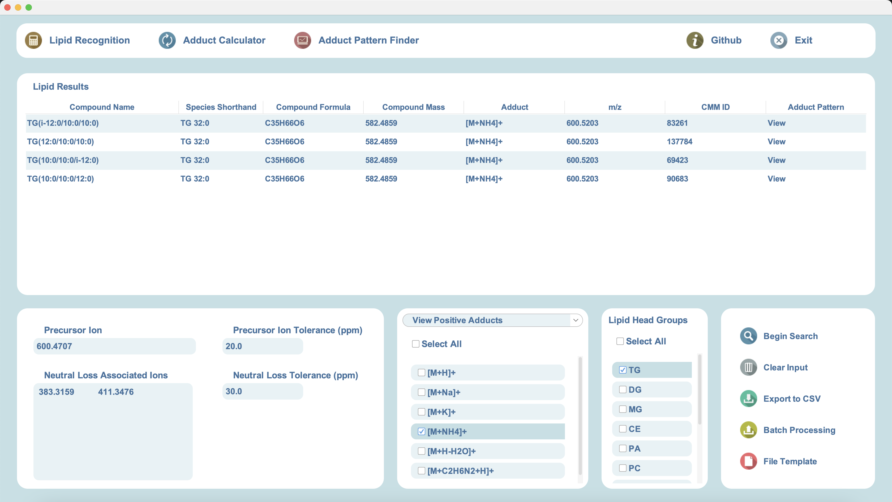
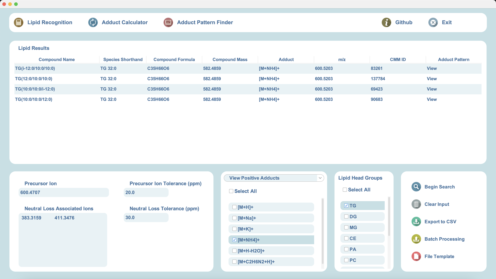
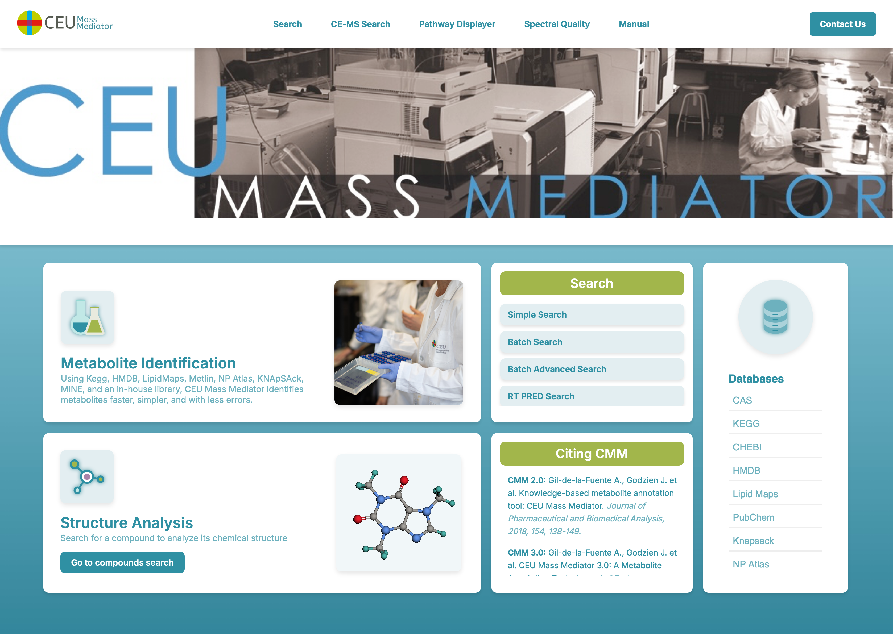
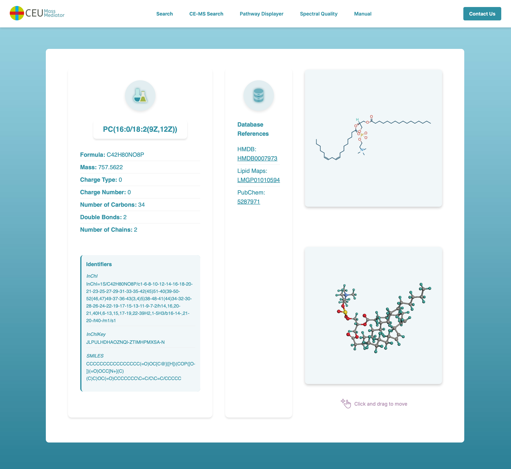
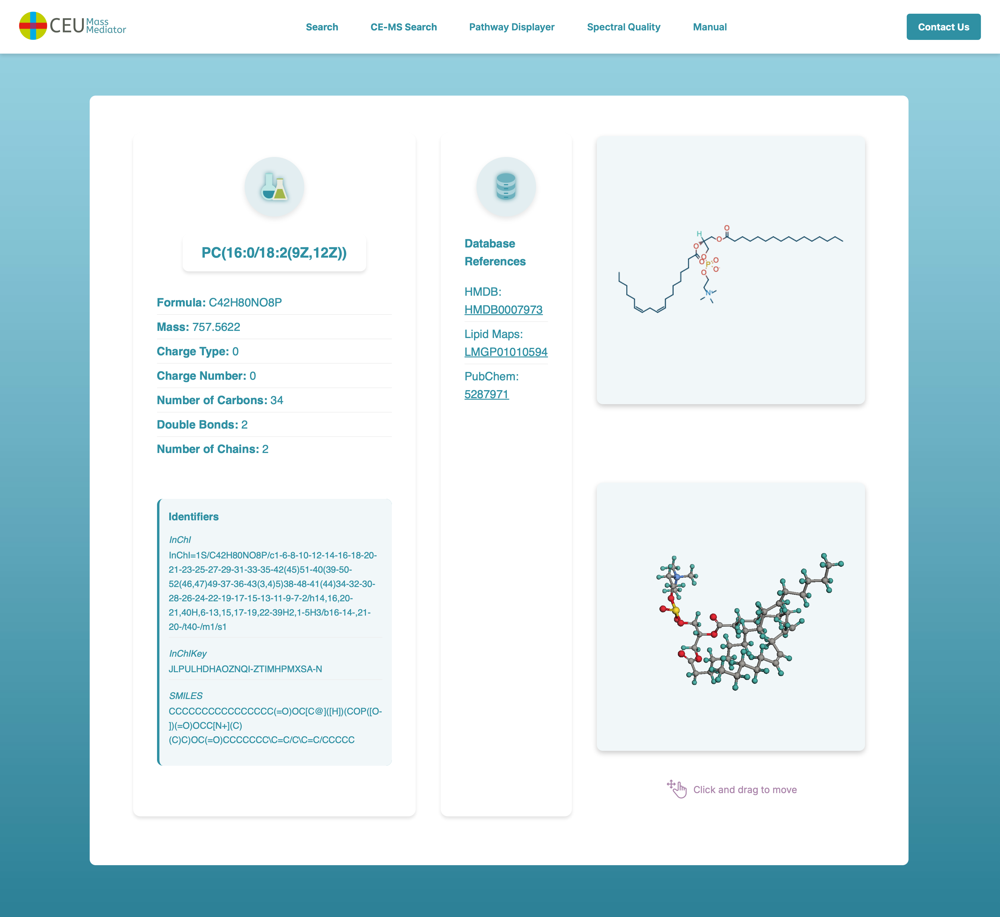
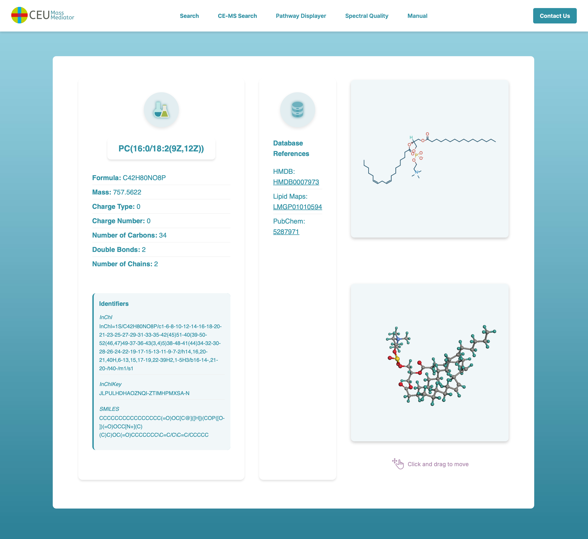
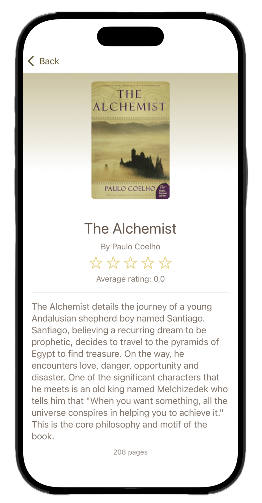
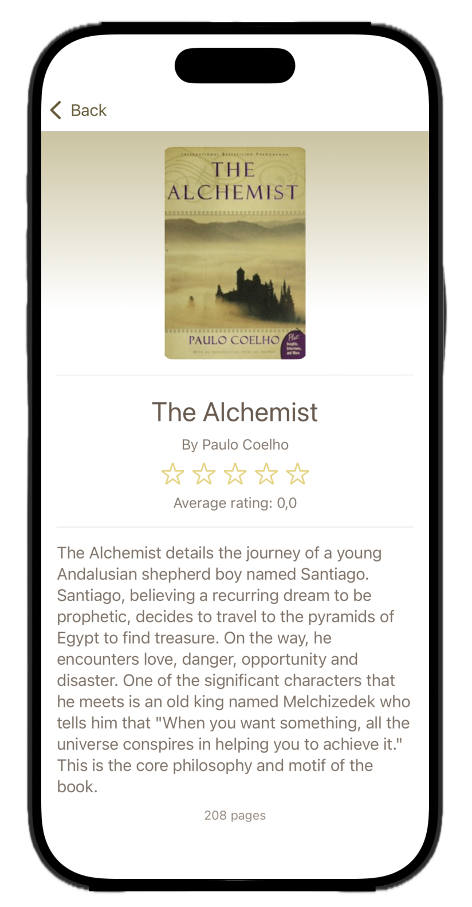
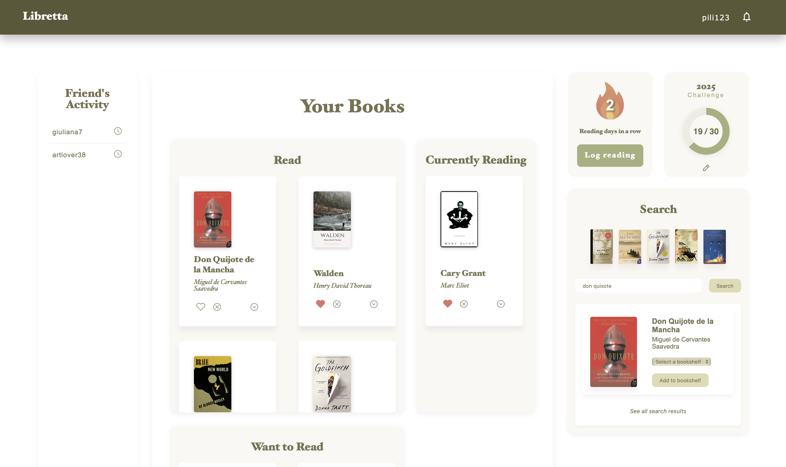
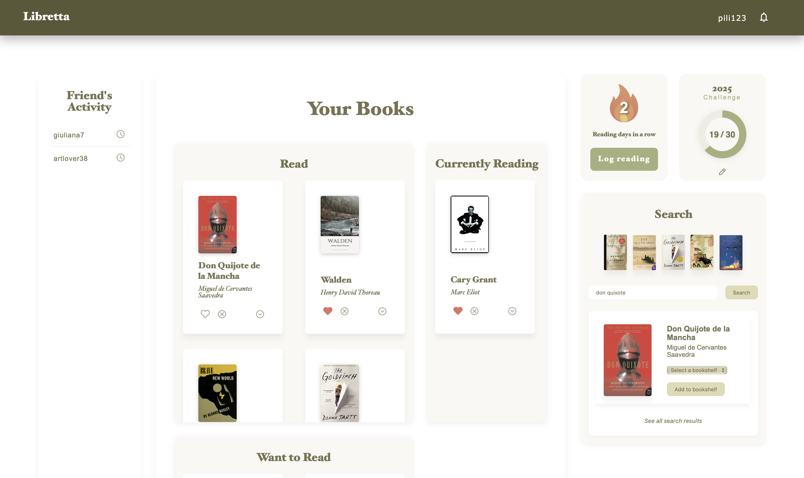

Java
Java
 JavaScript
JavaScript
 HTML
HTML
 CSS
CSS
 React
React
 Node.js
Node.js
 SQL
SQL
 AWS
AWS
 Swift
Swift
 Python
Git
Java
JavaScript
HTML
CSS
React
Node.js
SQL
AWS
Swift
Python
Git
Python
Git
Java
JavaScript
HTML
CSS
React
Node.js
SQL
AWS
Swift
Python
Git
I'm an American student based in Spain with dual EU and
US citizenship, giving me a global perspective and
strong cross-cultural communication skills.
Research Projects
Universidad CEU San Pablo - CEMBIO Laboratory
Lipid Identifier Swing Desktop App for Chemical Data Processing
Java
MySQL
Java Swing
SQL Injection Prevention
Scientific Software Development
 



Lipid Identifier is a desktop application intended for use by the CEMBIO laboratory, a metabolomics lab based at Universidad CEU San Pablo. The app, built in Java Swing, accepts input produced as a result of mass spectrometry-based testing and accurately identifies the chemical compounds that this data corresponds to, streamlining the investigative process and identification of unknown compounds. This project led to me working closely with researchers and introduced me to product development and the importance of aligning my views with the client's.
- Supported researchers in identifying and interpreting lipid profiles efficiently.
- Built a modular GUI using Java Swing with dedicated tools for lipid ID, adduct calculations, and intensity analysis.
CMM Website Front-End Redesign & Feature Expansion
React
JavaScript
HTML/CSS
PostgreSQL
Agile
UX/UI Design


 


The CEU Mass Mediator website, CMM, is a research-based website for the field of metabolomics. It supports input data from several different testing techniques including mass spectrometry, liquid chromatography, and capillary electrophoresis. CMM Version 4.0, the current updated website, presents a largely refactored application as the front-end, completed by me, has been entirely rewritten in React. Furthermore, I added several new key features such as the interactive pathway displayer and the 2D and 3D modeling of compounds.
- Refactored and redesigned the CEU Mass Mediator site used for biomedical data visualization.
- Collaborated through Agile pair programming and applied real-time feedback loops.
- Improved accessibility and UX using user-centered design for researchers and students.
Passion Projects
Libretta Mobile Application Digital Bookshelf iOS Application
Swift
UX/UI Design
iOS Development


 

Libretta is an iOS application that combines Kindle's e-reader capabilities with Goodreads' interactive ratings system. Being an avid reader, I wanted to build a project that combined both of my passions together: reading and programming. Built on XCode and supported by the OpenLibrary API, Libretta offers users an intuitive and gamified app which encourages a reading streak, suggests new titles, and allows users to interact with an aesthetic, approachable design.
- Designed and implemented a full-stack iOS application built solely in Swift.
- Considered user stories, data metrics, and feedback to optimize and continuously refactor code.
Libretta Website Digital Bookshelf Web Application
HTML/CSS
JavaScript
Node.js
APIs
UX/UI Design
 

The Libretta website works together with the mobile
application to provide users with a cohesive, comprehensive app
where they can track their reading, set goals, and interact with
friends. I chose to develop this project in pure JavaScript to
ensure I had a strong grasp on the fundamentals before continuing
with frameworks such as React.
My goal with Libretta was to create an app that I would like to use
in my
day-to-day life, one which would encourage daily reading and
help introduce me to new books. As a user, I appreciate when strong
attention to detail is given to an app's aesthetic. For that reason,
I dedicated myself to designing and planning Libretta before I began
coding. This allowed me to develop an app that I use everyday to
record the pages I've read, save new books I'm reading, and review
books I've already read.
- Designed and implemented a full-stack web application built in HTML/CSS, JavaScript, and Node.js.